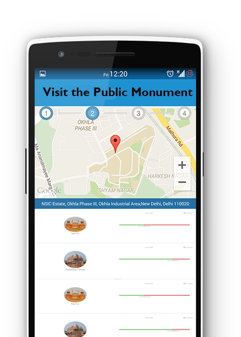

Smoother Public Monument Visits
using Dispersive Planning
Surveillance Platform


Checkout our Demo
Visit Dashboard
Checkout our Demo
Visit Dashboard

Directly Check-In for a Visit to a Public Monument. Get Crowd Analytics.

Get the shortest Queue. Obtain intelligently constructed route through the area.

Cover maximum campus area and fuel our analytics at the same time!